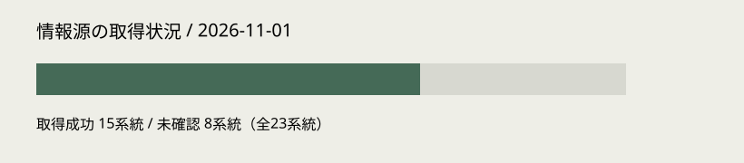

HW3 + HW4 · AUTOMATED SOURCE MONITOR
2026.11.01｜購入・補助金・中古相場とオーナーズトピックス
購入・補助金・中古相場・FSD・充電などの23系統中、15系統を取得。取得できなかった情報も明示します。

Darin Caggiano / Wikimedia Commons · CC BY-SA 4.0 · 縮小版。表示枠に合わせたトリミングあり。
これは取得結果の日本語レポートです。海外見出しは未検証の報道案内。国内の解禁・在庫・開業を自動認定する記事ではありません。
今回検出した更新
Spigen公式 Teslaアクセサリー：出典内容の変更候補
ページの共通部分やPDF差し替えも含むため、制度・価格・機能の変更内容は未判定。最新の原文確認が必要です。
公式発表・海外報道への入口
初回取得時の見出しは既存の参考記事です。見出しの掲載順と公開日は原文で確認してください。過去記事の再配信もあり得ます。
- 海外報道・未検証 · 新規検出South Korean Police Are Cracking Down On Tesla Owners Jailbreaking FSD - InsideEVs世界FSD報道の発見用RSS / 原文公開日 Sat, 31 Oct 2026 14:23:07 GMT
- 海外報道・未検証 · 新規検出FSD v12 on Older Tesla Hardware: 5 Details That Matter - BASENOR - Tesla Accessories世界FSD報道の発見用RSS / 原文公開日 Sun, 01 Nov 2026 01:03:54 GMT
- 海外報道・未検証 · 新規検出Tesla FSD’s New Safety Trick: It Can Grab Control To Dodge A Crash - Motor1.com世界FSD報道の発見用RSS / 原文公開日 Sat, 31 Oct 2026 13:41:29 GMT
- 海外報道・未検証 · 新規検出Tesla offers free FSD for up to a year in new referral program for FSD owners or subscribers - Note…世界FSD報道の発見用RSS / 原文公開日 Sat, 31 Oct 2026 19:06:00 GMT
- 規制当局・原文確認 · 新規検出Press Releases - NHTSA | National Highway Traffic Safety Administration (.gov)規制当局の関連発表（RSS発見） / 原文公開日 Sat, 17 Dec 2016 00:23:42 GMT
- 購入・補助金／未検証 · 新規検出米テスラ、年内に「サイバーキャブ」販売開始へ、個人オーナーへのテスト販売も視野 - ビジネス+IT日本のTesla購入・補助金の報道発見 / 原文公開日 Sun, 25 Oct 2026 02:47:00 GMT
- 購入・補助金／未検証 · 新規検出モメンタ日本へ急接近、テスラに迫れるか 中国E2E自動運転トップの技術力 - 日経クロステック日本のTesla購入・補助金の報道発見 / 原文公開日 Wed, 28 Oct 2026 20:00:00 GMT
- 購入・補助金／未検証 · 新規検出27年1月以降のEV補助､車種別一覧 トヨタbZ4Xは78万円 - 日本経済新聞日本のTesla購入・補助金の報道発見 / 原文公開日 Tue, 27 Oct 2026 20:00:00 GMT
- 購入・補助金／未検証 · 新規検出Robinhood vs. Warren Buffett - Reuters日本のTesla購入・補助金の報道発見 / 原文公開日 Fri, 30 Oct 2026 07:00:00 GMT
- アクセサリー／未検証 · 新規検出今週のダイジェスト【10/24～10/30】新型「パジェロ」ついに正式発表！ - www.goo-net.comTesla用アクセサリー新着の発見 / 原文公開日 Sat, 31 Oct 2026 03:00:00 GMT
- アクセサリー／未検証 · 新規検出今週のダイジェスト【10/24〜10/30】新型「パジェロ」ついに正式発表！ - ｄメニューニュースTesla用アクセサリー新着の発見 / 原文公開日 Sat, 31 Oct 2026 03:00:00 GMT
日本のオーナーへの確認ポイント
HW3・HW4とも、海外の提供開始・価格・バージョンを国内条件へ直接適用しないでください。在庫は公式商品画面、新しい充電拠点は公式詳細と車内地図を確認します。国内の開始時期を推定できる新たな根拠は、この定型レポートでは認定していません。
購入前・オーナー向け：今日の確認ポイント
購入特典は対象車・期限・残枠、補助金は登録日別の額・申請期限・予算終了見込みを分けて確認。FSDはHWと契約、アップデートは日本向け配信条件を確認します。アクセサリーは車両世代・実寸・国内販売条件を照合します。
本日のモデル別・年式別中古相場
元データ：カーセンサーの公開相場表。価格帯ごとの分布から中央値の所属範囲を求めたものです。グレード・距離・修復歴の構成をそろえた指数ではありません。
カーセンサー Model 3 掲載価格相場
取得 2026-11-01T10:16:20+09:00 / 掲載 174台。出典：掲載価格分布 ↗
| 登録年の区分 | 掲載台数 | 中央値が属する範囲（本体価格） | 注意 |
|---|---|---|---|
| 2019年 | 12台 | 205万円以上〜225万円未満 | 掲載価格・成約価格ではない |
| 2020年 | 15台 | 205万円以上〜225万円未満 | 掲載価格・成約価格ではない |
| 2021年 | 64台 | 225万円以上〜245万円未満 | 掲載価格・成約価格ではない |
| 2022年 | 57台 | 265万円以上〜285万円未満 | 掲載価格・成約価格ではない |
| 2023年 | 8台 | 385万円以上〜405万円未満 | 少数標本（10台未満） |
| 2024年 | 12台 | 365万円以上〜385万円未満 | 掲載価格・成約価格ではない |
| 2025年 | 5台 | 385万円以上〜405万円未満 | 少数標本（10台未満） |
国内導入前の年式区分 1台を表から除外。入力誤りや並行輸入を自動判定していません。
カーセンサー Model Y 掲載価格相場
取得 2026-11-01T10:16:20+09:00 / 掲載 137台。出典：掲載価格分布 ↗
| 登録年の区分 | 掲載台数 | 中央値が属する範囲（本体価格） | 注意 |
|---|---|---|---|
| 2022年 | 46台 | 295万円以上〜315万円未満 | 掲載価格・成約価格ではない |
| 2023年 | 48台 | 315万円以上〜335万円未満 | 掲載価格・成約価格ではない |
| 2024年 | 14台 | 375万円以上〜395万円未満 | 掲載価格・成約価格ではない |
| 2025年 | 25台 | 495万円以上〜515万円未満 | 掲載価格・成約価格ではない |
| 2026年以降 | 4台 | 515万円以上〜575万円未満 | 少数標本（10台未満） |
カーセンサー Model S 掲載価格相場
取得 2026-11-01T10:16:20+09:00 / 掲載 23台。出典：掲載価格分布 ↗
| 登録年の区分 | 掲載台数 | 中央値が属する範囲（本体価格） | 注意 |
|---|---|---|---|
| 2014年 | 1台 | 275万円以上〜295万円未満 | 少数標本（10台未満） |
| 2015年 | 2台 | 295万円以上〜455万円未満 | 少数標本（10台未満） |
| 2016年 | 3台 | 235万円以上〜255万円未満 | 少数標本（10台未満） |
| 2017年 | 2台 | 0万円以上〜235万円未満 | 少数標本（10台未満） |
| 2018年 | 5台 | 375万円以上〜395万円未満 | 少数標本（10台未満） |
| 2019年 | 1台 | 255万円以上〜275万円未満 | 少数標本（10台未満） |
| 2020年 | 5台 | 415万円以上〜435万円未満 | 少数標本（10台未満） |
| 2021年 | 1台 | 555万円以上〜575万円未満 | 少数標本（10台未満） |
| 2023年 | 3台 | 915万円以上 | 少数標本（10台未満） |
カーセンサー Model X 掲載価格相場
取得 2026-11-01T10:16:20+09:00 / 掲載 42台。出典：掲載価格分布 ↗
| 登録年の区分 | 掲載台数 | 中央値が属する範囲（本体価格） | 注意 |
|---|---|---|---|
| 2016年 | 1台 | 0万円以上〜285万円未満 | 少数標本（10台未満） |
| 2017年 | 14台 | 385万円以上〜445万円未満 | 掲載価格・成約価格ではない |
| 2018年 | 8台 | 465万円以上〜505万円未満 | 少数標本（10台未満） |
| 2019年 | 4台 | 425万円以上〜645万円未満 | 少数標本（10台未満） |
| 2020年 | 10台 | 545万円以上〜605万円未満 | 掲載価格・成約価格ではない |
| 2021年 | 1台 | 685万円以上〜705万円未満 | 少数標本（10台未満） |
| 2023年 | 4台 | 1085万円以上〜1105万円未満 | 少数標本（10台未満） |
この日の取得状況

| 情報源 | 状態 | 確認時刻 |
|---|---|---|
| Tesla Japan 公式発表 | 取得成功 | 2026-11-01T10:16:20+09:00 |
| 世界FSD報道の発見用RSS | 取得成功 | 2026-11-01T10:16:20+09:00 |
| FSD 世界提供地域（Tesla公式） | 未確認 / アクセス制限により自動取得できません | 2026-11-01T10:16:20+09:00 |
| FSD 米国価格・機能（Tesla公式） | 未確認 / アクセス制限により自動取得できません | 2026-11-01T10:16:20+09:00 |
| オランダRDW：FSD承認の公式説明 | 取得成功 | 2026-11-01T10:16:20+09:00 |
| 規制当局の関連発表（RSS発見） | 取得成功 | 2026-11-01T10:16:20+09:00 |
| 米国NHTSA TeslaリコールAPI / Model Y 2026 | 取得成功 | 2026-11-01T10:16:20+09:00 |
| 日本Supercharger公式一覧 | 未確認 / アクセス制限により自動取得できません | 2026-11-01T10:16:20+09:00 |
| モバイルコネクター公式商品 | 未確認 / アクセス制限により自動取得できません | 2026-11-01T10:16:20+09:00 |
| ウォールコネクター公式商品 | 未確認 / アクセス制限により自動取得できません | 2026-11-01T10:16:20+09:00 |
| CHAdeMO公式商品（URL存続も確認） | 未確認 / アクセス制限により自動取得できません | 2026-11-01T10:16:20+09:00 |
| 日本公式ショップ充電カテゴリ | 未確認 / アクセス制限により自動取得できません | 2026-11-01T10:16:20+09:00 |
| CEV公式：登録日別・車両別の補助額PDF | 取得成功 | 2026-11-01T10:16:20+09:00 |
| CEV補助金：実施機関のお知らせ | 取得成功 | 2026-11-01T10:16:20+09:00 |
| Tesla日本：現在の購入特典 | 未確認 / アクセス制限により自動取得できません | 2026-11-01T10:16:20+09:00 |
| Spigen公式 Teslaアクセサリー | 取得成功 | 2026-11-01T10:16:20+09:00 |
| 日本のTesla購入・補助金の報道発見 | 取得成功 | 2026-11-01T10:16:20+09:00 |
| Teslaアップデートの報道発見 | 取得成功 | 2026-11-01T10:16:20+09:00 |
| Tesla用アクセサリー新着の発見 | 取得成功 | 2026-11-01T10:16:20+09:00 |
| カーセンサー Model 3 掲載価格相場 | 取得成功 | 2026-11-01T10:16:20+09:00 |
| カーセンサー Model Y 掲載価格相場 | 取得成功 | 2026-11-01T10:16:20+09:00 |
| カーセンサー Model S 掲載価格相場 | 取得成功 | 2026-11-01T10:16:20+09:00 |
| カーセンサー Model X 掲載価格相場 | 取得成功 | 2026-11-01T10:16:20+09:00 |

Nashucks / Wikimedia Commons · CC0 · 縮小版。表示枠に合わせたトリミングあり。

Vauxford / Wikimedia Commons · CC BY-SA 4.0 · 縮小版。表示枠に合わせたトリミングあり。